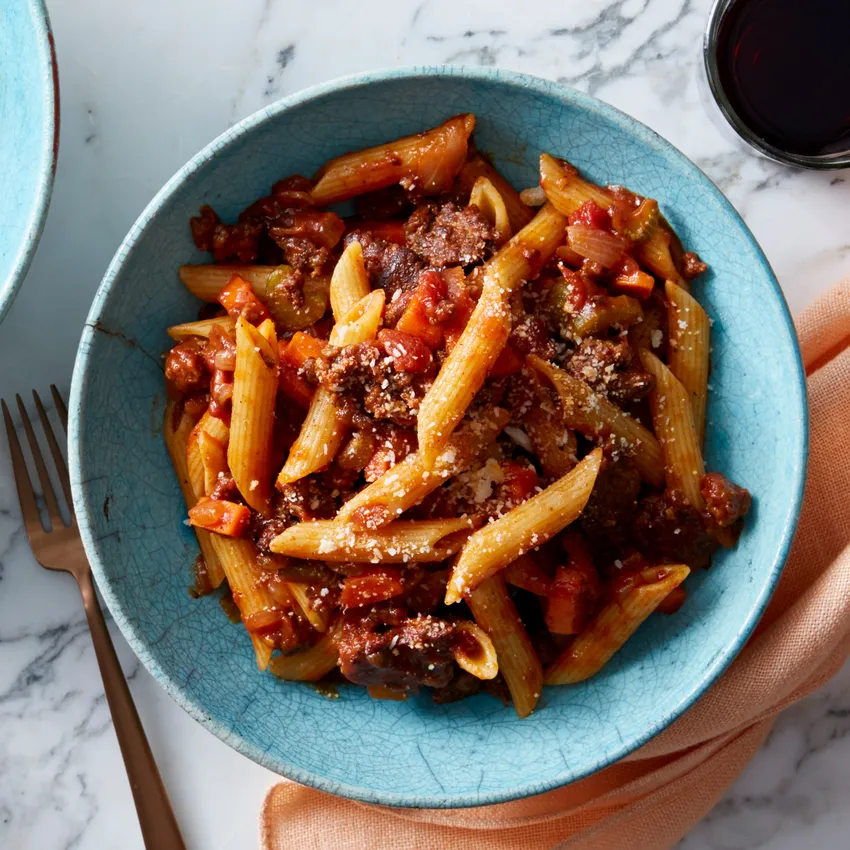

Penne and Beef

Description
Beef penne is an easy and delicious weeknight dinner.
Penne noodles with ground beef and your favorite pasta sauce.
Ingredients
- Whole grain penne pasta
- Ground chuck
- Pasta sauce
- Red pepper flakes
Steps
- Boil pasta for 10 minutes in salted water. Stir occasionally and drain thoroughly when done.
- Brown beef on medium high in a non-stick pan. Drain thoroughly and season with salt, pepper, garlic and onion.
- Pour your pasta sauce into the pan and mix in with beef over medium heat until sauce is warm.
- Serve meat sauce over noodles with plenty of red pepper flakes.